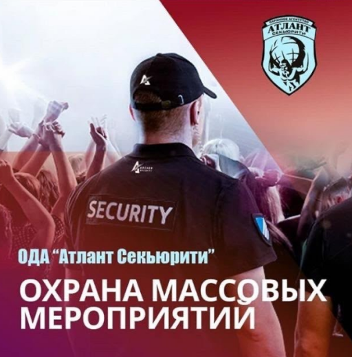

01 / EVENT SECURITY
Охрана мероприятий
Обеспечение порядка и безопасности на концертах, массовых и частных событиях.
Узнать подробнее ↗АТЛАНТ СЕКЬЮРИТИ — надёжная охрана объектов, мероприятий и бизнеса. Ответственный подход к организации безопасности, внимательность к деталям и решения с учётом особенностей каждого объекта.
Более 15 лет опыта в сфере охранных услуг.
Охранное агентство «Атлант Секьюрити» обеспечивает безопасность объектов, мероприятий и частных заказчиков. Наш подход основан на оценке особенностей объекта, согласовании задач, дисциплине сотрудников и постоянном взаимодействии с заказчиком. Мы стремимся выстраивать понятную систему охраны, в которой каждый участник знает свою зону ответственности.

Подбираем решение под специфику вашего объекта или мероприятия.

Обеспечение порядка и безопасности на концертах, массовых и частных событиях.
Узнать подробнее ↗
Охрана коммерческих, общественных и других объектов с учётом их особенностей.
Узнать подробнее ↗
Решения для видеоконтроля и наблюдения за территорией и помещениями.
Узнать подробнее ↗
Мониторинг охранных сигналов и организация реагирования по согласованной схеме.
Узнать подробнее ↗Надёжная охрана начинается с грамотной организации, чётких задач и внимательного отношения к каждому клиенту.
Мы понимаем важность безопасности людей, имущества и бизнеса. Поэтому уделяем особое внимание согласованию обязанностей, порядку действий и требованиям заказчика.
Организованная работа сотрудников, соблюдение согласованных правил и внимательность к обстановке помогают поддерживать порядок на охраняемой территории.
У каждого объекта свои задачи: входные группы, потоки посетителей, режим работы и особенности территории. Мы обсуждаем эти детали до начала сотрудничества.
Качество охранных услуг зависит от ясных инструкций, координации и обратной связи. Мы ориентируемся на понятное взаимодействие с клиентом и совершенствование процессов.
В вопросах безопасности важна корректная работа с информацией об объекте, сотрудниках и внутренних правилах заказчика.
Физическая охрана, видеонаблюдение, пультовый контроль и обеспечение порядка на мероприятиях могут дополнять друг друга в единой системе безопасности.

Защита объекта — это не только присутствие охраны. Важно заранее определить потенциальные риски, порядок доступа, зоны контроля и способы связи между ответственными лицами.
Мы стремимся предложить заказчику понятный формат сотрудничества: обсуждение задачи, подбор подходящих услуг, согласование условий и дальнейшее взаимодействие.
Каждый объект требует своего подхода. Расскажите о ваших потребностях — обсудим доступные варианты охранных услуг.
Организация пропускного режима, контроль входных зон и поддержание порядка.
Обсуждение мер защиты имущества, помещений и прилегающих территорий.
Организация охраны площадки, работа с потоками гостей и содействие поддержанию порядка.
Подбор вариантов наблюдения и контроля с учётом задач объекта.
15 лет опыта в охранной сфере — важная часть истории агентства. Для нас безопасность означает последовательность, серьёзное отношение к обязательствам и уважение к клиенту.
Мы стремимся к долгосрочному сотрудничеству и открыто обсуждаем потребности заказчиков. Наша задача — помогать создавать более организованную и контролируемую среду для людей и имущества.
Получить консультацию ↗
Реальные фотографии сотрудников и работы агентства.
Мы ценим доверие клиентов и стремимся поддерживать высокий уровень услуг. Здесь можно разместить реальные отзывы заказчиков с их разрешения.
Связаться и узнать больше ↗Напишите нам, и мы обсудим подходящие охранные услуги.